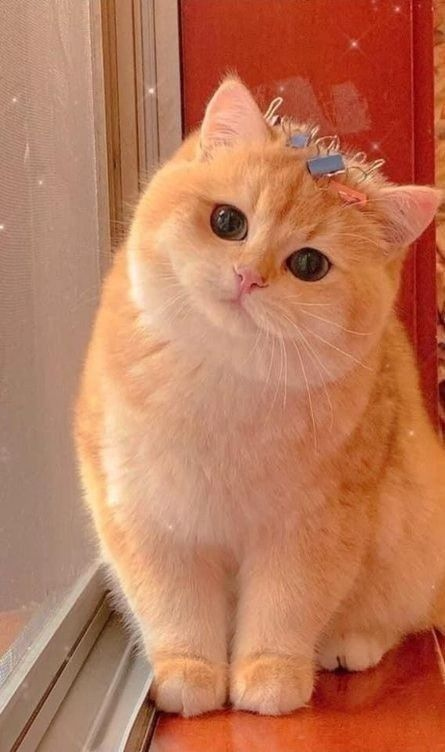

|
||
|---|---|---|
| |
||
Kilas singkat tentang kehidupan penulis :
|
Nah dimasa sekarang ini pasti kita tidak asing lagi mendengar sebuthan "kucheng oren bar-bar" di sekitar kita. Masih banyaknya orang yang percaya bahwa warna bulu dari kucing bisa berpengaruh ke kepribadiannya. Memangnya warna bulu kucing pengaruh ke sifatnya ya? Berdasarkan penelitian yang dijelaskan di situs University of California Bekeley menemukan beberapa fakta menarik mengenai warna bulu kucing dan kepribadiannya. Studi yang berdasarkan survei itu menemukan indikasi kucing warna hitam lebih mudah beradaptasi dengan keramaian dan lingkungan dalam ruang ketimbang kucing dengan pola tabby (lurik). Sementara pemilik kucing calico (belang tiga) mengaku kucingnya punya kelakuan berbeda dibandingkan kucing dengan warna lainnya. "Secara keseluruhan, kucing oranye dan kucing dua warna dikategorikan ramah, sedangkan kucing hitam, kucing putih, dan kucing tiga warna dianggap lebih antisosial. Kucing putih dianggap lebih pemalu, malas dan tenang, sementara kucing tortoiseshell lebih cenderung digambarkan tidak toleran dan lebih mudah dilatih." Kucing Oren Jenis Apa?Umumnya kucing warna oren masuk dalam golongan Kucing Tabi dan mereka bisa berasal dari berbagai ras kucing domestik seperti Persia, Maine Coon, dan lainnya Mengapa Kucing Oren bar-bar?Nah, Kucing oren ini didominasi oleh kucing dengan kelamin jantan loh, dan sudah menjadi rahasia umum bahwa kucing jantan lebih agresif daripada betina, karena itulah kucing oren mendapatkan julukan sebagai kucing barbar. Kucing jantan cenderung lebih agresif karena :
Kucing dengan warna oren adalah kucing yang paling sering kita jumpai di sekitar kita. Bisa dikatakan warna oren ini sangat mendominasi jika dibandingkan warna kucing lainnya. Perpaduan banyaknya jumlah kucing berwarna oren yang bertebaran di beberapa sudut lingkungan dan kenyataan bahwa kucing oren didominasi kucing jantan yang dikenal cenderung agresif membuat kucing oren mendapatkan julukan sebagai kucing bar-bar. PenutupTerlepas dari semua stereotip yang melekat pada kucing oren, setiap perilaku kucing tidaklah selalu berpengaruh oleh warna bulunya saja. Masih banyaknya studi yang belum menemukan alasan pasti atas fenomena tersebut. Tetapi dari pendapat dan hasil pengalaman saya menjalani hidup dengan kucing oren saya tercinta, jelaslah kucing oren ini lebih banyak tingkahnya dibandingkan kucing saya yang berwarna lain. Berikut cuplikan kucing saya yang selesai membuat onar> |
|
| © Copyright all rights reserved
Ditulis oleh Armila Sakinah Hasibuan |
||